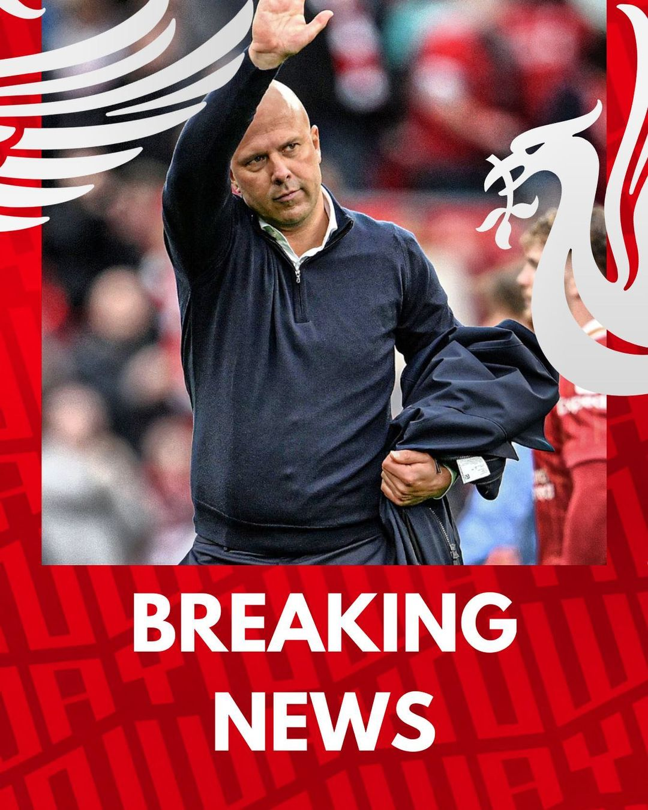
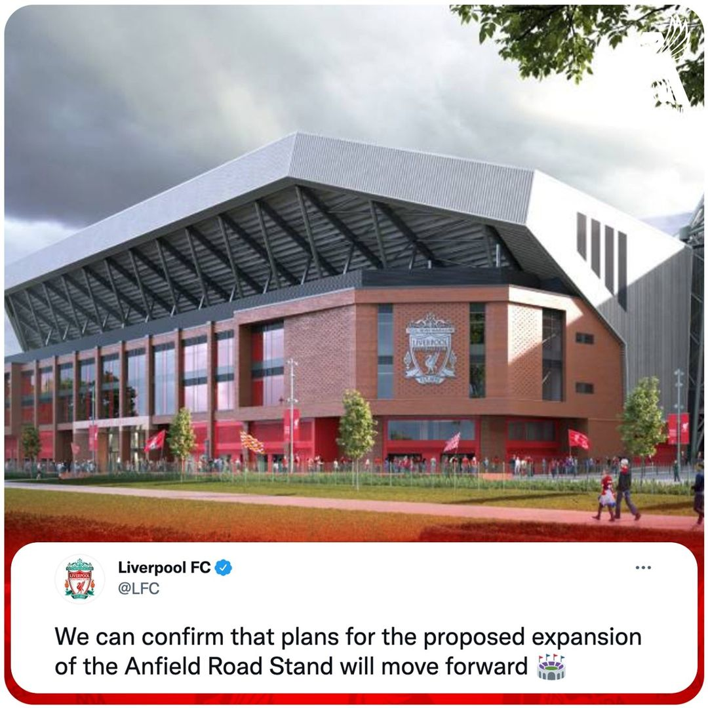
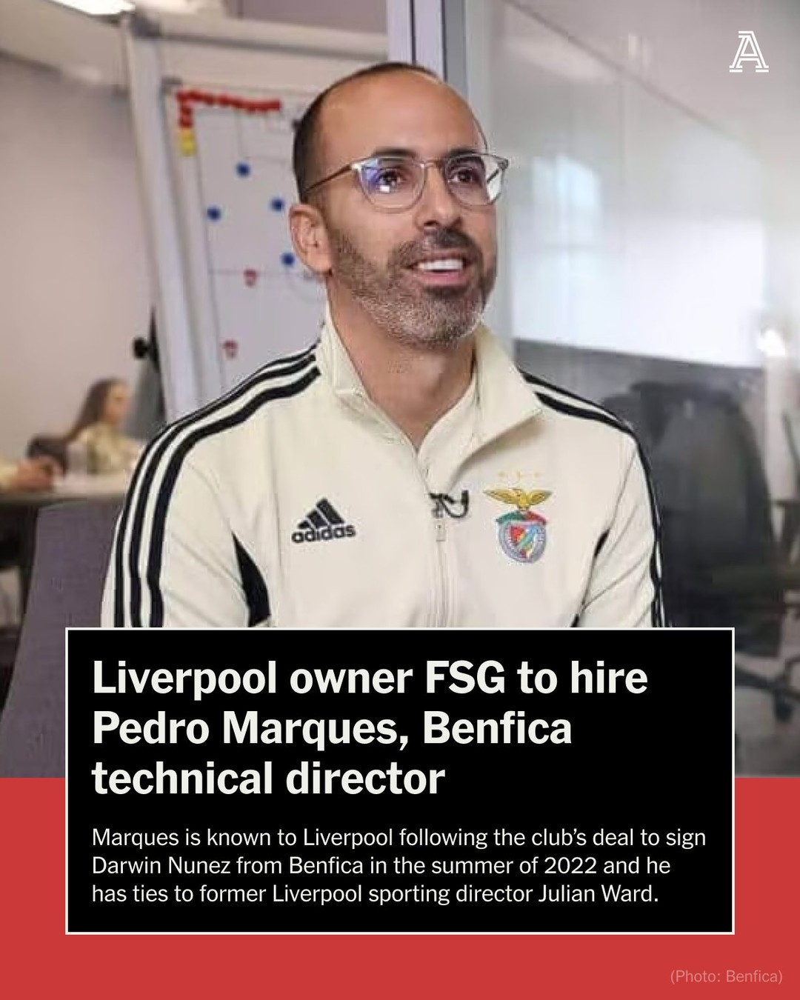

The New Head Coach
Liverpool's current head coach is Arne Slot. He took over the role in June 2024, succeeding Jürgen Klopp. Slot, a 45-year-old Dutch coach, was previously the head coach of Feyenoord, where he led the team to the league title in 2023 and was named Eredivisie Manager of the Year twice. He also won the KNVB Cup with Feyenoord in April 20241. Slot's appointment marks a new era for Liverpool as he brings his extensive experience and successful track record to the club. Do you think he'll be able to maintain Liverpool's high standards?
The Field Of Dreams
Liverpool FC is a professional football club based in Liverpool, England. Founded on June 3, 1892, the club competes in the Premier League, the top tier of English football1. Liverpool plays its home games at Anfield, which has a capacity of 61,276. The club is one of the most successful and widely supported in the world. Domestically, Liverpool has won 19 league titles, 8 FA Cups, 10 League Cups, and 16 FA Community Shields. Internationally, they have secured 6 European Cups, 3 UEFA Cups, 4 UEFA Super Cups, and 1 FIFA Club World Cup. Liverpool is known for its distinctive all-red home strip and the club anthem "You'll Never Walk Alone," both adopted under the management of Bill Shankly in the 1960s. The club has a fierce rivalry with Everton, known as the Merseyside derby, and also competes with Manchester United in the North West Derby
FSG Hires P Marques
Fenway Sports Group (FSG), Liverpool's owners, are close to confirming the appointment of Pedro Marques as part of their new setup. Marques, currently the technical director at Benfica, is set to join FSG in a key role overseeing their football operations1. This move is seen as a significant coup for FSG, given Marques' strong reputation and extensive experience in football performance analysis and player development. Marques previously worked with the City Football Group, where he helped develop coaching methodologies and performance analysis for multiple clubs. His appointment is part of FSG's strategy to transition into a multi-club ownership model and maintain a consistent style of play and culture across their clubs